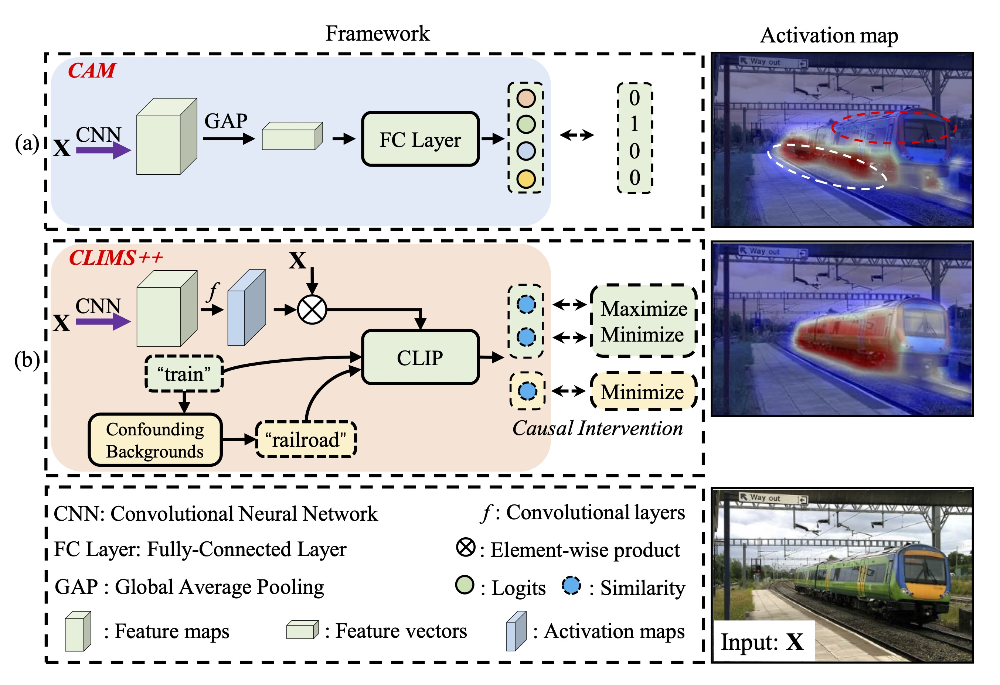
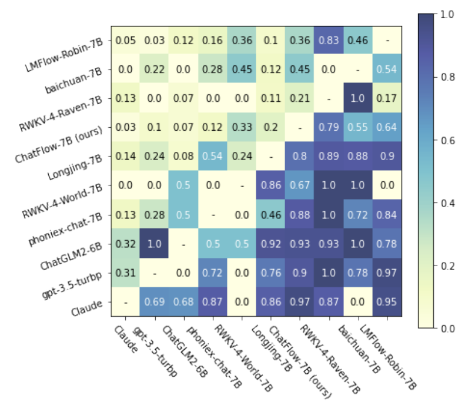
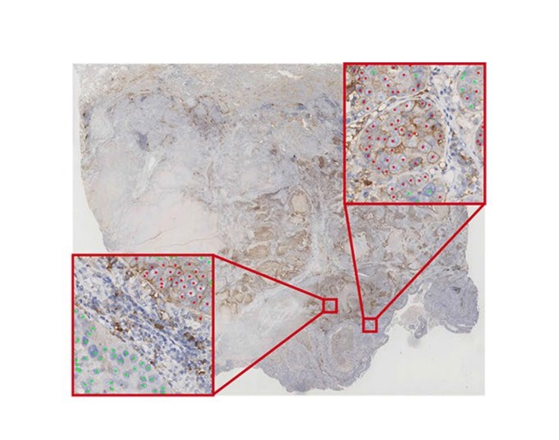

Publications
2025
-  IJCVClims++: Cross language image matching with automatic context discovery for weakly supervised semantic segmentationInternational Journal of Computer Vision (IJCV) , 2025
- ICASSPHigh-Fidelity Editable Portrait Synthesis with 3D GAN InversionIn EEE International Conference on Acoustics, Speech and Signal Processing (ICASSP) , 2025
- CVPRFaceBench: A Multi-View Multi-Level Facial Attribute VQA Dataset for Benchmarking Face Perception MLLMsIn Proceedings of the IEEE/CVF Conference on Computer Vision and Pattern Recognition (CVPR) , 2025
2024
- Light-aware contrastive learning for low-light image enhancementACM Transactions on Multimedia Computing, Communications and Applications , 2024
-  ICASSPDynamic data sampler for cross-language transfer learning in large language modelsIn IEEE International Conference on Acoustics, Speech and Signal Processing (ICASSP) , 2024
2023
- PR
- IJCBStyleAU: StyleGAN based Facial Action Unit Manipulation for Expression EditingIn IEEE International Joint Conference on Biometrics (IJCB) , 2023
2022
- ACM MMTalk2Face: A Unified Sequence-based Framework for Diverse Face Generation and Analysis TasksIn Proceedings of the ACM International Conference on Multimedia (ACM MM) , 2022
- TMMTextFace: Text-to-Style Mapping based Face Generation and ManipulationIEEE Transactions on Multimedia (TMM) , 2022
- ECCVRamGAN: Region Attentive Morphing GAN for Region-Level Makeup TransferIn European Conference on Computer Vision (ECCV) , 2022
- TMMLifelong Age Transformation with a Deep Generative PriorIEEE Transactions on Multimedia (TMM) , 2022
- ISPRSImproving synthetic 3D model-aided indoor image localization via domain adaptationISPRS Journal of Photogrammetry and Remote Sensing (ISPRS) , 2022
- NNGuidedStyle: Attribute knowledge guided style manipulation for semantic face editingNeural Networks (NN) , 2022
2021
- ACM MMSSFlow: Style-guided Neural Spline Flows for Face Image ManipulationIn Proceedings of the ACM International Conference on Multimedia (ACM MM) , 2021
-  SRAutomated tumor proportion score analysis for PD-L1 (22C3) expression in lung squamous cell carcinomaScientific reports (SR) , 2021
 IJCNN
GazeFlow: Gaze Redirection with Normalizing FlowsIn International Joint Conference on Neural Networks (IJCNN) , 2021
IJCNN
GazeFlow: Gaze Redirection with Normalizing FlowsIn International Joint Conference on Neural Networks (IJCNN) , 2021- NNRobust facial landmark detection by cross-order cross-semantic deep networkNeural Networks (NN) , 2021
2020
- TIPEnd-to-end single image fog removal using enhanced cycle consistent adversarial networksIEEE Transactions on Image Processing (TIP) , 2020
- IVCClass-aware domain adaptation for improving adversarial robustnessImage and Vision Computing (IVC) , 2020
- MMMVHS to HDTV Video Translation Using Multi-task Adversarial LearningIn International Conference on Multimedia Modeling (MMM) , 2020
- CVPREnd-to-end illuminant estimation based on deep metric learningIn Proceedings of the IEEE/CVF Conference on Computer Vision and Pattern Recognition (CVPR) , 2020
2019
- TMIAttention by selection: A deep selective attention approach to breast cancer classificationIEEE transactions on medical imaging (TMI) , 2019
- IVCDeep reinforcement learning-based patch selection for illuminant estimationImage and Vision Computing (IVC) , 2019
- MICCAIDual adaptive pyramid network for cross-stain histopathology image segmentationIn International Conference on Medical Image Computing and Computer-Assisted Intervention (MICCAI) , 2019
- NeurocomputingImproving variational autoencoder with deep feature consistent and generative adversarial trainingNeurocomputing (Neurocomputing) , 2019
- CVPRWLearning deep image priors for blind image denoisingIn Proceedings of the IEEE/CVF Conference on Computer Vision and Pattern Recognition Workshops (CVPRW) , 2019
2018
- VCIPDirect Application of Convolutional Neural Network Features to Image Quality AssessmentIn IEEE Visual Communications and Image Processing (VCIP) , 2018
2017
- Deep feature consistent deep image transformations: Downscaling, decolorization and HDR tone mappingarXiv preprint arXiv:1707.09482 , 2017
- Image companding and inverse halftoning using deep convolutional neural networksarXiv preprint arXiv:1707.00116 , 2017
- MVAObject specific deep feature and its application to face detectionIn 2017 Fifteenth IAPR International Conference on Machine Vision Applications (MVA) (MVA) , 2017
 WACV
WACV